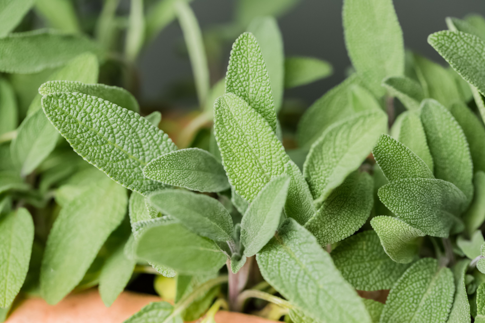
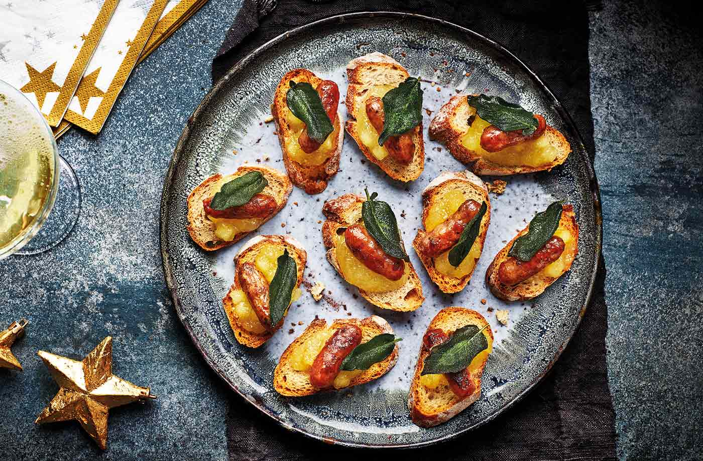

Sage
A semi-shrubby plant features wooly, gray-green, aromatic, ovate leaves
Garden sage is easy to grow—and a wonderful culinary herb that flavors meat and bean dishes (including that Thanksgiving stuffing).

light_mode
Sun explosure
Full
water_drop
Water
Fairly dry
straighten
Spread
30''
height
Height
12''-48''
today
Lifespan
3-5 years
Tips for growing:
- Plant sage in full sun.
- Sage should be planted in well-draining soil; it won't tolerate sitting in wet soil.
- The easiest and best way to start sage is from a small plant. Set the plants 2 feet apart.
- For best growth, the soil should be between 60º and 70ºF.
- Plants should grow to be between 12 and 30 inches in height.
- In the garden, plant near rosemary, cabbage, and carrots, but keep sage away from cucumbers.

Recipe: Sage and Apple Crostini
- Cook the cocktail sausages to pack instructions. Put the baguette in the oven on a tray for the final 8 mins. Transfer to separate plates.
- Meanwhile, heat the oil in a frying pan over a high heat. Once hot, add the sage and fry for 1 min or until crisp.
- Transfer to a bowl. Put the apple sauce in a bowl.
- To assemble, spoon a little apple sauce onto a baguette slice and top with a sausage and fried sage leaf.